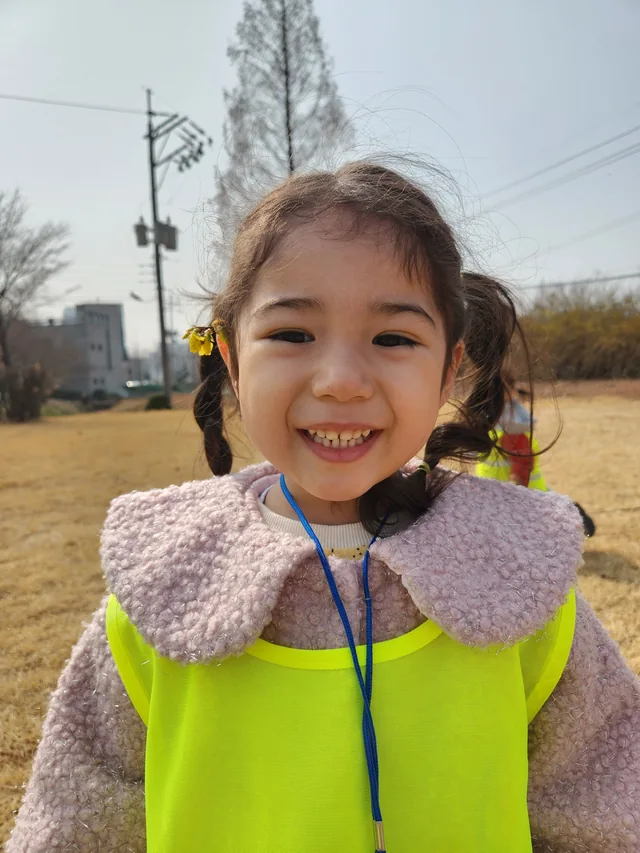
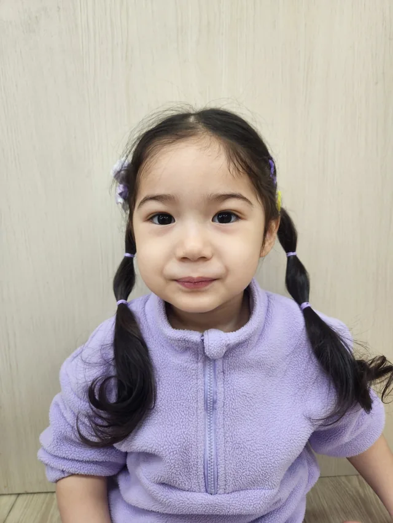
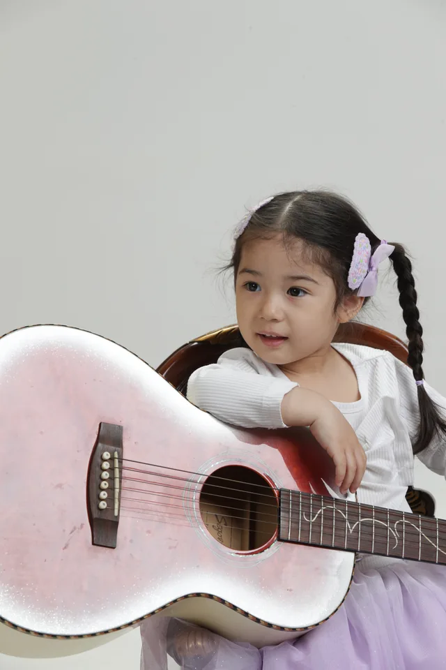
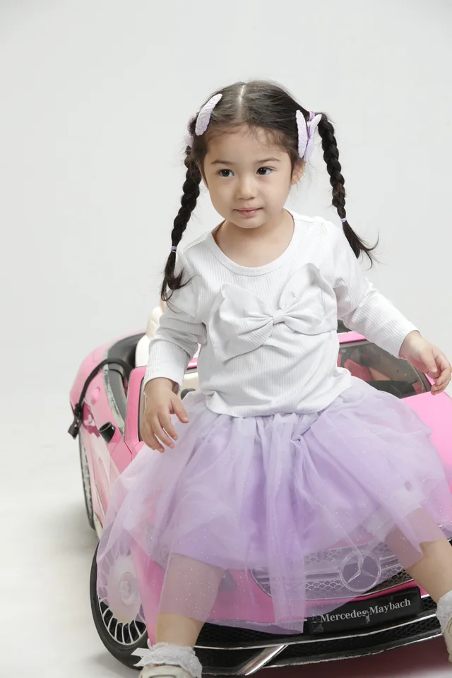
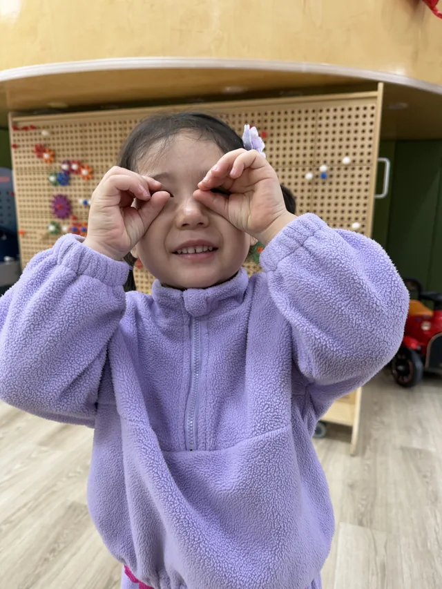
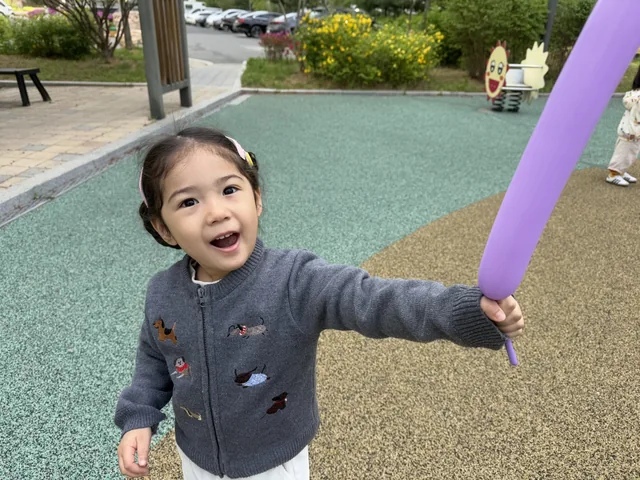

A little sunshine.

Just E-LINE.

Play, in every way.

Made of little moments.

A different expression.

Hello, possibilities.
KIM E-LINE · KIDS MODEL
작은 순간,
큰 가능성.
꾸미지 않은 표정, 일린만의 작은 빛.
한 장면을 특별하게 만드는 자연스러움을 만나보세요.
KIDS FASHION✳LIFESTYLE✳COMMERCIAL✳ACTING✳JUST BEING E-LINE
01 / ABOUT E-LINEA NATURAL LITTLE SPARK
어떤 장면에도,
일린다운 자연스러움.
안녕하세요, 김일린입니다.
새로운 사람과도 편안하게, 카메라 앞에서도 나답게.
작은 호기심이 다채로운 표정으로 이어집니다.
키즈 패션부터 생활 속 이야기까지.
밝은 에너지와 자연스러운 반응으로
브랜드의 장면에 생기를 더하고 싶어요.
김일린 KIM E-LINE
Born2023
Based in서울 · 경기
Schedule주말 중심
BackgroundKorean–Algerian
02 / SELECTED MOMENTSTHE MANY SIDES OF E-LINE
일린의 순간들.
웃고, 몰입하고, 발견하는 모든 순간.
03 / A GOOD FITNATURAL IN EVERY SCENE
함께 그려갈
다음 장면.
자연스러운 시선과 풍부한 표정.
일린의 매력이 어울리는 분야를 소개합니다.
A LITTLE SPARK,
A NEW STORY.
01키즈 패션 & 피팅
화이트와 라벤더, 드레스와 일상복까지.
다양한 의상에 어울리는 자연스러운 포즈.
라이프스타일 & 식품
놀이하고 맛보고 발견하는 순간.
생활 속 반응이 생생하게 살아 있는 장면.
완구 & 교육
소품과의 상호작용, 새로운 활동에 대한 집중.
호기심과 몰입을 담는 생활형 콘텐츠.
영상 광고 & 아동 연기
낯가림이 적고 일상 대화와 촬영 지시 수행이 가능해요.
밝은 에너지와 다채로운 표정이 필요한 장면.
촬영 콘셉트와 일정은 보호자와 함께 조율합니다.
04 / MODEL PROFILEMEET E-LINE AT A GLANCE
- HEIGHT
- 97cm
- WEIGHT
- 15kg
- CLOTHING
- 100
- SHOES
- 150mm
- 출생 / 성별
- 2023년생 / 여아
- 활동 지역 / 일정
- 서울·경기 / 주말 중심
- 언어·배경
- Korean–Algerian background
알제리 아랍어 듣기 및 간단한 단어 말하기 가능 - 촬영 강점
- 낯가림이 적음 · 일상 대화 · 촬영 지시 수행
풍부한 표정과 자연스러운 근접 촬영 시선
신체 정보는 제공 프로필 기준입니다. 현재 사이즈와 활동 일정은 섭외 시 확인해 주세요.